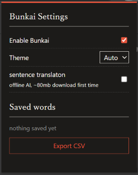
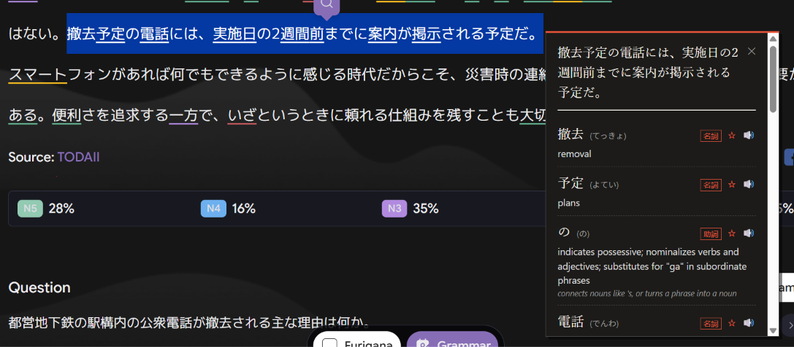
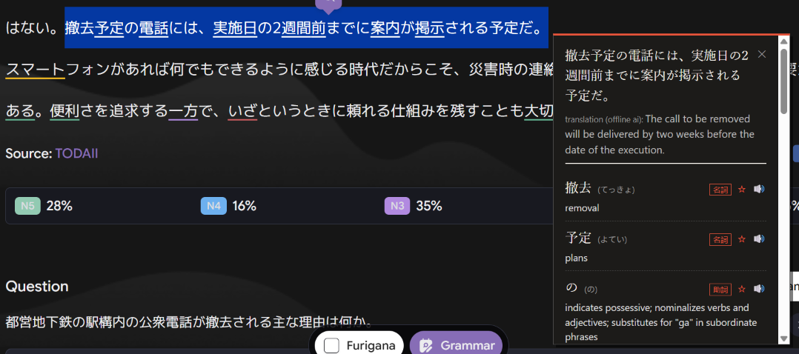

分解 bunkai
break down any japanese sentence word by word. now fully offline! no api key needed.
try it
the extension



install
- download the latest release from github and unzip it
- go to
chrome://extensionsand turn on developer mode - click "load unpacked" and pick the folder
how it works
the hard part
splitting japanese is hard!! english has spaces, so splitting it is easy as setting spaces as your delimiter. japanese doesn't, so something like "わたしはねこがすきです" is just one long string of letters, and a computer has to guess how it's split up. hiragana-only is even harder, because it's more ambiguous. for example, はは could be 母(mom) or は and は, two topic particles.
splitting sentences into words
now, there IS already a free library called kuromoji that's good at splitting normal japanese. however, it chops up verbs into itty bitty pieces! like 食べ / られ / なかっ / た. so! i wrote code to glue those pieces back into one word.
also. kuromoji is bad at all-hiragana, so i had to write my own splitter! the way it works is every possible word gets a cost. it's based on a couple of things. common words are cheap, particles are really cheap, and weird single characters are expensive. the splitter finds the configuration with the lowest total cost with dynamic programming for efficiency. to recognize conjugated verbs, i wrote code to turn it back into dictionary form.
figuring out the kanji
let's take あさ for example. it could be morning. or cannabis. who knows? not the dictionary. so, it tries each spelling and asks itself, "which version of the whole sentence sounds most like real japanese?" but how do we ask that question??? well, we count words that show up next to each other, of course! from around 249000 real sentences. for our あさ example, 朝から(from morning) shows up a lot, and 麻から(from cannabis) basically never does. oh, and instead of trying literally every combo, it builds left to right and only keeps the best 3 at each step (beam search!).
no ai, fully offline
version one of this extension was all ai. the original bunkai sent your text to google's gemini. and so, it needed an api key, and internet, and the highlighted text left your computer and went to who knows where. and it was just a big AI model, so it could make up anything it felt like! ew! so, i decided, no way jose, i'm going through tens of hours of work to rip out gemini!! (basically, i rebuilt everything with a dictionary and rules, all local!) however... to pick the right kanji, the rules didn't work too well. so, "AI", in a sense, almost came back, with an attempt to use qwen (a 500mb neural network) to score natural-sounding kanji. it worked kinda well, but 500mb was waaay too big to put in an extension. also, ew, ai (sort of)! so! i replaced it with counting. an n-gram model that counts which words appear next to each other in real sentences. it was so, so, SO much better. oh my. it was only 3 megabytes. it was instant. it was better?! and it's not ai! just stats from the '80s. now, everything bunkai does, from splitting words to looking them up to picking kanji, is rules and counting. it runs ENTIRELY in your browser, nothing gets sent anywhere sketchy, and there's no model to hallucinate in the first place.
however! some form of ai is necessary for the full sentence translation. it's off by default, but i've included a small translation model with a one-time download of 80mb. it runs fully locally and gives a rough translation which could be helpful. enable it if you want!
bugs along the way
of course, this thing said some really cursed stuff while it was being built. i thought they were kinda funny, so i'm putting my favorites here. enjoy.
- が (the subject particle) came out as "moth." こと (thing) was a 13-stringed japanese zither.
- わたし (i/me) was "ferry." i guess i am boat...
- "today it's been raining since the morning" became "today it's been raining since the cannabis sect." which is unfortunate? maybe?
- "i'm fine" (げんきです) turned into "i'm fine at bamboo screen." good for you.
- "i play baseball with my dad" turned into "i know baseball with 乳." you can translate that kanji yourself.
- "there's a box on the shelf" turned into "there's a daughter on the shelf." get her down from there!!
- "i want to buy a new car" turned into "i want to dismantle a new car." (um don't do that guys)
- "i caught a cold and missed school" turned into... "i played my cold like a musical instrument and missed school." bro played his ailment like a fiddle.
...yeah.